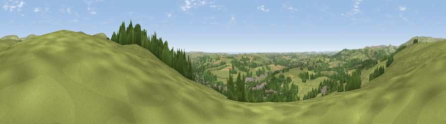

Viewpoint near Ivybridge
#3616 in England · top 9% of its area beats it · near IvybridgeThe view, rendered

A 360° render of this exact spot computed from the terrain model, tree cover and land cover — summer colours, afternoon light, calibrated against photographs of famous viewpoints. Real trees, hedges and buildings will differ in detail.
The panorama
Grey silhouette: terrain skyline in each direction (720 bearings, Earth curvature and refraction included). Dashed green: skyline with trees (+15 m) and buildings (+8 m) as obstacles. Blue strip: how far the ground is visible on each bearing.
Where the view opens
Wedge length = distance to the farthest visible ground on that bearing (vegetation-aware). Rings at 10, 25 and 50 km.
What fills the view
57% grassland · 23% woodland · 13% cropland · 6% built-up ·
Angular shares of the visible panorama (visual magnitude), not map area. Landscape diversity 0.49 (0–1 Shannon).
Key numbers
More beautiful places nearby
The staircase of upgrades: each row has a higher view potential than everything closer. Driving times are estimates from straight-line distance, calibrated against real road routing — check an actual route before setting out.
| Place | Direction | Drive | Score |
|---|---|---|---|
| Western Beacon | E · 3 km | ~7 min | 81.9 |
| Viewpoint near Lee Moor | NW · 9 km | ~17 min | 82.7 |
| Viewpoint near Hope | SSE · 19 km | ~33 min | 84.4 |
| Viewpoint near East Prawle | SE · 25 km | ~41 min | 84.6 |
| Pencarrow Head | W · 48 km | ~68 min | 86.0 |
| Viewpoint near Lesnewth | NW · 61 km | ~84 min | 87.7 |
| Viewpoint near Crackington Haven | NW · 62 km | ~84 min | 88.1 |
| Golden Cap | ENE · 85 km | ~110 min | 88.7 |
50.39926, -3.93374 · source: screening · position refined by local search. Computed location — check access rights before visiting.